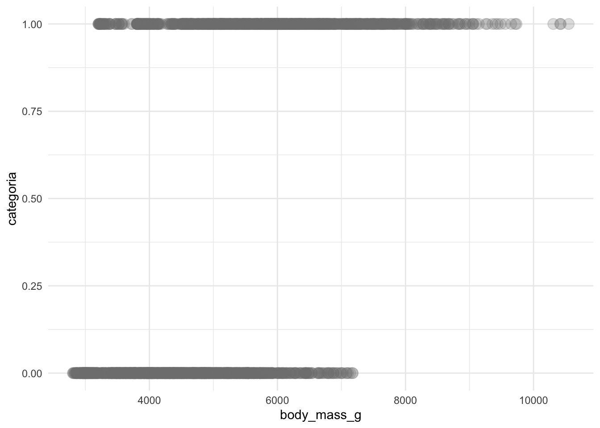
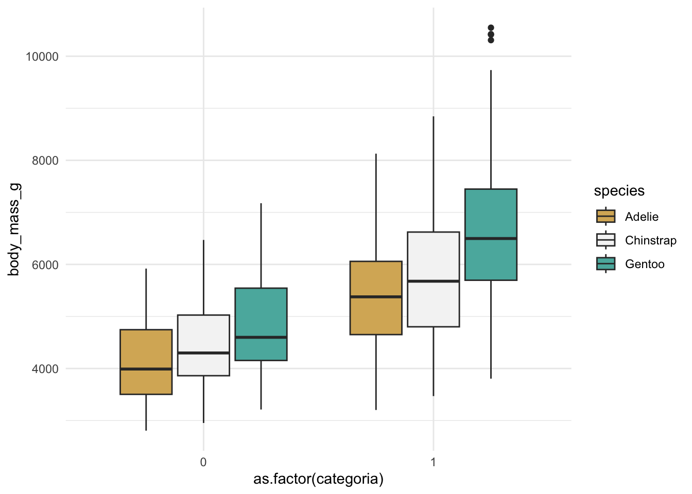
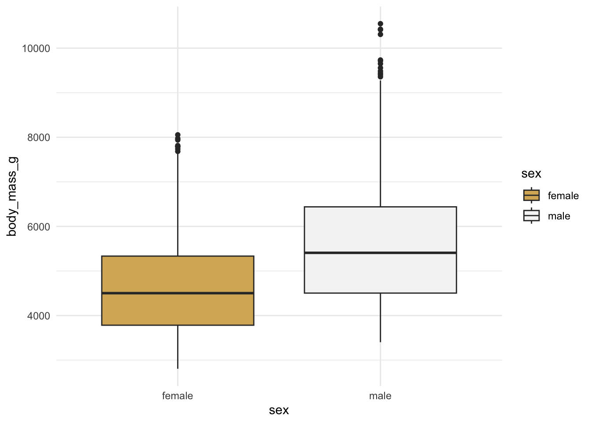
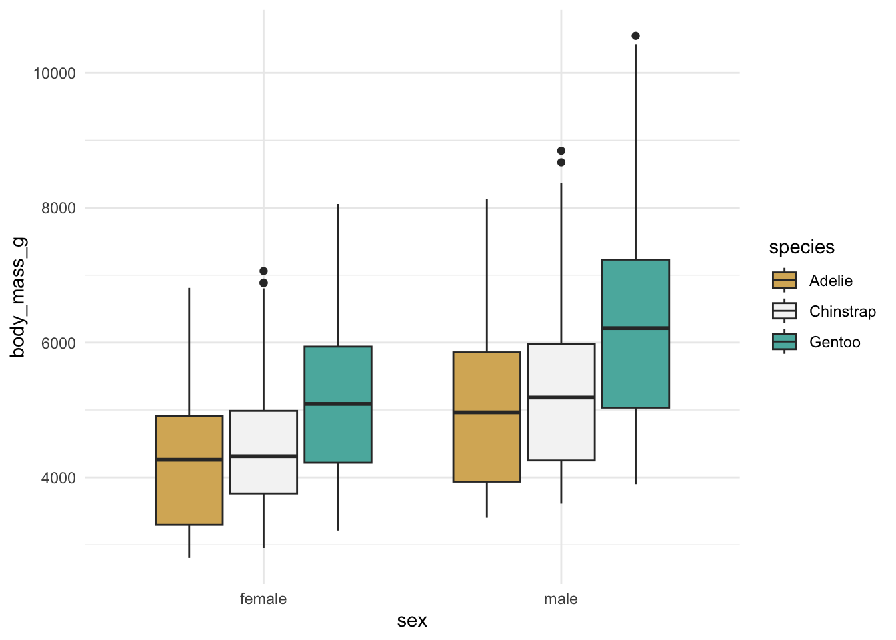
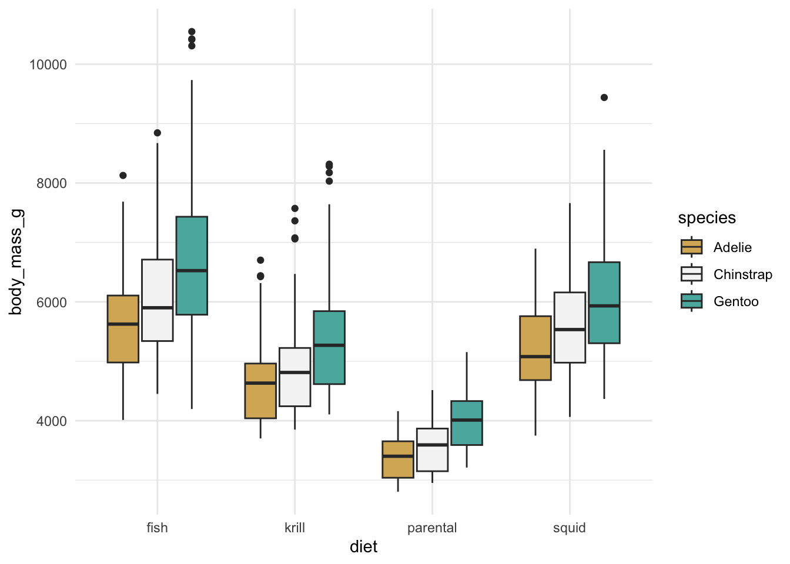
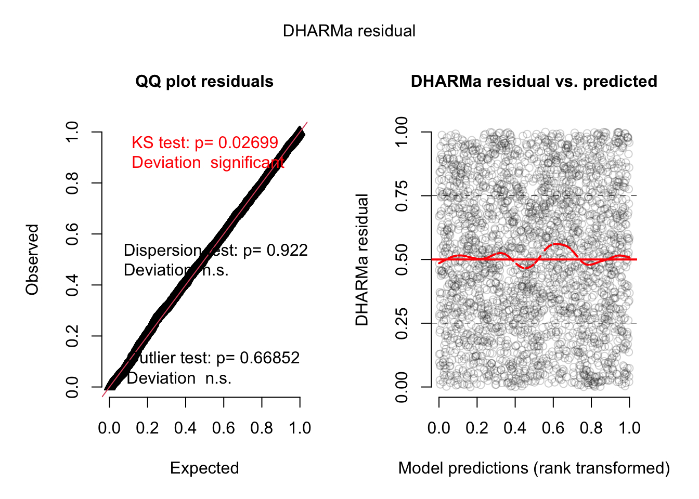
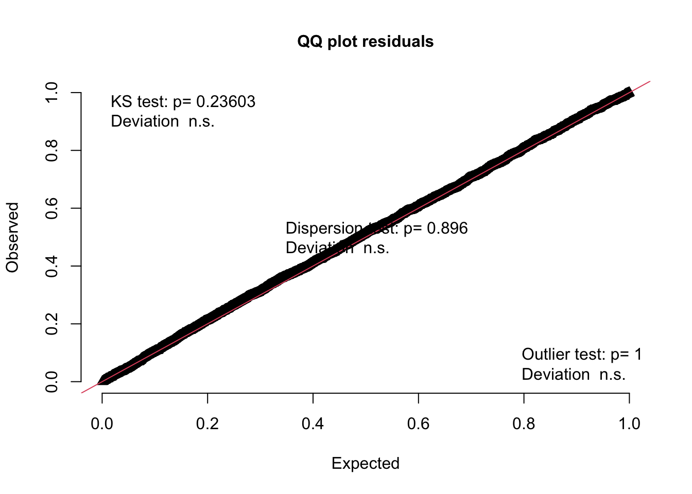
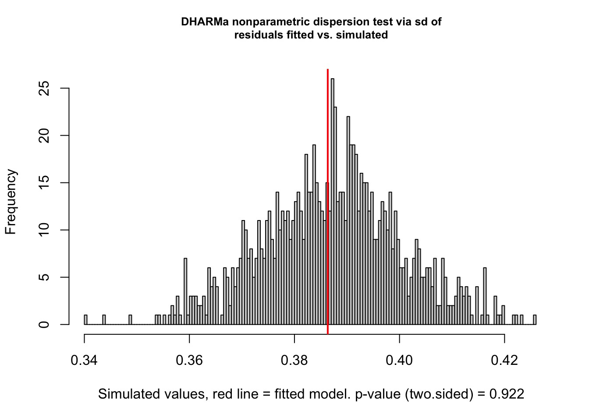
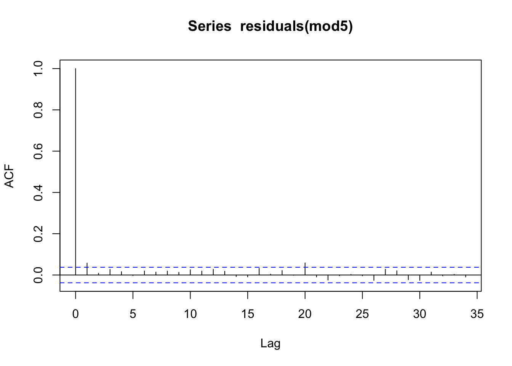
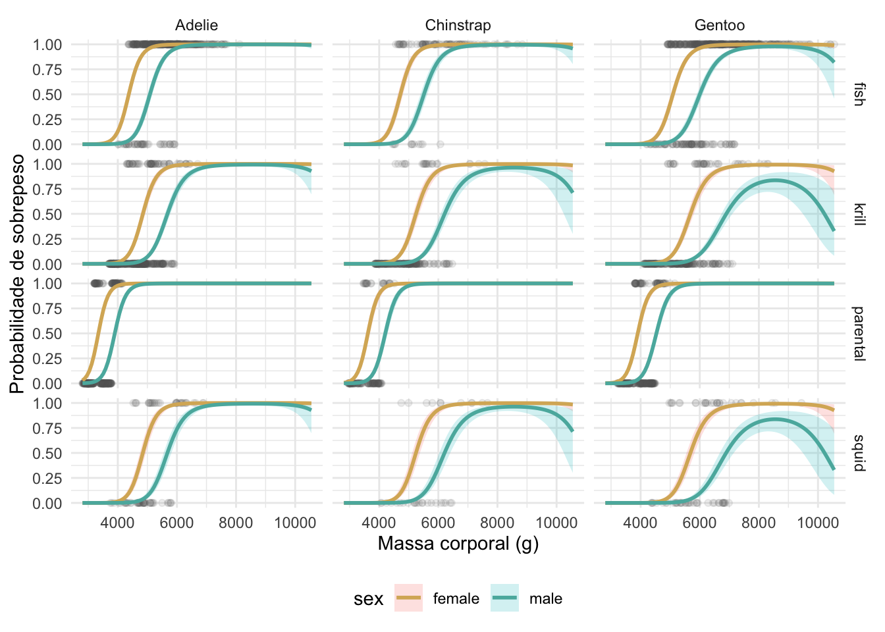

Capítulo 2 GLM para dados binários
2.1 Introdução
Dados binários são caracterizados por variáveis que podem assumir apenas dois estados possíveis (0-1). Exemplos incluem:
- Presença ausência de espécies
- Proporção de machos/fêmeas em uma população
- Sobreviveu ou não sobreviveu
Para exemplificar o modelo logístico, usaremos os dados dos pinguins de Palmer, armazenados no diretório /Dados da disciplina.
#~~~~~~~~~~~~~~~~~~~~~~~~~~~~~~~~
# 1. Importando o banco de dados
#~~~~~~~~~~~~~~~~~~~~~~~~~~~~~~~~
dados <- readRDS("../Dados/palmerpenguins_extended.rds")Esses dados foram coletados como parte de uma pesquisa científica para estudar o comportamento de forrageamento dos pinguins da Antártida e sua relação com a variabilidade ambiental.
Os dados foram coletados entre os anos 2021 e 2025, e fornecem informações sobre 3430 pinguins de três espécies.
Vejamos as outras informações contidas no banco de dados:
## 'data.frame': 3430 obs. of 11 variables:
## $ species : chr "Adelie" "Adelie" "Adelie" "Adelie" ...
## $ island : chr "Biscoe" "Biscoe" "Biscoe" "Biscoe" ...
## $ bill_length_mm : num 53.4 49.3 55.7 38 60.7 35.7 61 66.1 61.4 54.9 ...
## $ bill_depth_mm : num 17.8 18.1 16.6 15.6 17.9 16.8 20.8 20.8 19.9 22.3 ...
## $ flipper_length_mm: num 219 245 226 221 177 194 211 246 270 230 ...
## $ body_mass_g : num 5687 6811 5388 6262 4811 ...
## $ sex : chr "female" "female" "female" "female" ...
## $ diet : chr "fish" "fish" "fish" "fish" ...
## $ life_stage : chr "adult" "adult" "adult" "adult" ...
## $ health_metrics : chr "overweight" "overweight" "overweight" "overweight" ...
## $ year : int 2021 2021 2021 2021 2021 2021 2021 2021 2021 2021 ...2.2 Análise exploratória (breve)
2.2.1 Corrigindo os tipos de variáveis
Antes de efetuar a análise exploratória, é importante que cada variável do banco de dados seja caracterizado de acordo com sua natureza (character, factor, numeric, integer, etc.).
Olhando a estrutura dos dados, percebemos que precisamos converter as variáveis character em fator
- Isso permitirá que os níveis do fator possam ser comparados (graficamente e estatisticamente)
2.2.2 Analisando as métricas de saúde
A coluna health_metrics armazena informação sobre as categorias de peso, baseados nos pesos individuais destacados na coluna body_mass_g.
##
## healthy overweight underweight
## 1550 1167 713Ao todo, temos três categorias de peso:
- saudável
- sobrepeso
- abaixo do peso
Para rodar o modelo logístico, vamos considerar apenas os indivíduos categorizados como saudável ou sobrepeso.
Analisaremos as três categorias na aula de modelo multinomial!
Precisamos, portanto, filtrar os dados para remover os indivíduos que estão abaixo do peso>
## Filtrando os dados ##
library(dplyr)
dados2 <- filter(dados, !(health_metrics == "underweight"))
dados2 %>%
group_by(health_metrics) %>%
summarise(Npinguins = n()) %>%
mutate(Proporcao = Npinguins / sum(Npinguins)) #43% dos pinguins são obesos!## # A tibble: 2 × 3
## health_metrics Npinguins Proporcao
## <fct> <int> <dbl>
## 1 healthy 1550 0.570
## 2 overweight 1167 0.430Agora podemos avaliar a relação dessas categorias em função de algumas covariáveis inclusas no banco de dados.
library(ggplot2)
## Relação com o peso individual ##
# Precisamos converter as categorias de peso em formato binário
dados2$categoria <- ifelse(dados2$health_metrics == "overweight",1, 0)
ggplot(dados2, aes(x = body_mass_g, y = categoria)) +
geom_point(size = 4, col = 'gray50', alpha = 0.25) +
theme_minimal()
Podemos ver que há muitos pinguins com baixo peso corporal porém categorizado como sobrepeso. Isso não faz muito sentido e é um claro indício de que precisamos considerar a relação com outras covariáveis.
É natural supor que cada espécie vai apresentar um peso médio próprio. Isso explica, em parte, o por que de observarmos indivíduos obsesos associados a menores massas corporais:
## Relação peso individual vs. espécie ##
ggplot(dados2, aes(x = as.factor(categoria), y = body_mass_g, fill = species)) +
geom_boxplot() +
scale_fill_brewer(palette="BrBG") +
theme_minimal()
Além disso, sabemos que o peso médio também difere em relação ao sexo do invidíduo (fêmea/macho)
## Relação peso individual vs. sexo ##
ggplot(dados2, aes(x = sex, y = body_mass_g, fill = sex)) +
geom_boxplot() +
scale_fill_brewer(palette="BrBG") +
theme_minimal()
## Relação peso individual vs. sexo & espécie ##
ggplot(dados2, aes(x = sex, y = body_mass_g, fill = species)) +
geom_boxplot() +
scale_fill_brewer(palette="BrBG") +
theme_minimal()
Podemos nos questionar se o tipo de dieta influencia no peso dos pinguins:
## Relação peso individual vs. dieta ##
ggplot(dados2, aes(x = diet, y = body_mass_g, fill = species)) +
geom_boxplot() +
scale_fill_brewer(palette="BrBG") +
theme_minimal()
Como podemos ver, os pesos médios dos pinguins diferem quanto a espécie, o sexo e a sua dieta. Portanto, isso também influenciará na categoria de peso (sobrepeso (1), normal (0))
2.3 Hipóteses
Com base nessas breves observações, podemos começar a formular algumas hipóteses:
\(H_1:\) A probabilidade de sobrepeso difere entre as difrerentes espécies, com a espécie Gentoo apresentando às maiores probabilidades
\(H_2:\) Os machos apresentam maiores probabilidades de sobrepeso
\(H_3:\) O sobrepeso pode ser determinado pela dieta
2.4 Objetivos
Avaliar como fatores biológicos (espécie e sexo) e ecológicos (composição da dieta) influenciam na probabilidade de sobrepeso em pinguins do Arquipélago Palmer.
2.4.1 Objetivos específicos
- Estimar a influência das espécies na probabilidade de sobrepeso
- Permitirá determinar se os pinguins-gentoo, pinguins-de-barbicha e pinguins-de-adélia diferem significativamente na probabilidade de estarem acima do peso
- Avaliar o efeito do sexo na probabilidade de sobrepeso, irrespectivo da espécie
- Permitirá avaliar qual dos sexos tem maiores probabilidade de sobrepeso
- Avaliar o papel da composição da dieta na probabilidade de sobrepeso, irrespectivo da espécie
- Permitirá avaliar qual item alimentar está associado à maiores probabilidade de sobrepeso
2.5 Metodologia
Para avaliar os fatores que influenciam o sobrepeso em pinguins, será utilizado um modelo de regressão logística (i.e., modelo binomial), visto que a variável resposta (health_metrics) é binária (sobrepeso (1) vs. normal (0)). Indivíduos classificados como abaixo do peso foram excluídos das análises de modo que o foco do estudo seja apenas na população com peso normal e sobrepeso.
Podemos resumir o modelo conforme:
\[y_i \sim Binomial(n_i, p_i)\]
\[logit(p_i) = \eta_i = \beta_0 +\sum_{j=1}^{J} \beta_j x_{ij}\]
onde \(y_i\) é o iesmo pinguim, \(n_i\) o número total de pinguins, \(p_i\) a probabilidade do iesmo pinguim estar acima do peso, \(\beta_0\) o intercepto (i.e., peso médio), \(j\) número de covariáveis, \(\beta_j\) os coeficientes que quantificam o efeito das covariáveis \(x_j\).
Poderíamos escrever o modelo completo, conforme
\[logit(p_i) = \beta_0 + \beta_1\text{Peso}_i+ \beta_2\text{Especie}_i + \beta_3\text{Sexo}_i + \beta_4\text{Dieta}_i\]
Atenção: Repare que o modelo contém 3 covariáveis categóricas e uma numérica - estamos, portanto, montando uma ANCOVA usando uma distribuição binomial!
Este único modelo é suficiente para responder aos três objetivos específicos. No entanto, para vias de exercício, iremos testar diversos modelos para achar o modelo que melhor se ajuste aos dados. Para tanto, usaremos o método “forward-stepwise”, em que partimos do modelo nulo e inserimos uma covariável por vez.
Os modelos serão comparados pelos valores de AIC e, quando necessário, contrastados (testados) via o teste de razão de verossimilhança. Além disso, o ajuste dos modelos será analisado via análises gráficas dos resíduos.
2.6 Análises & Resultados
Iniciaremos as análises montando os modelos, partindo do modelo mais simples (modelo nulo) para o modelo mais complexo (contém todas as covariáveis).
#~~~~~~~~~~~~~~~~~~~~~~
# 3) Testando modelos
#~~~~~~~~~~~~~~~~~~~~~~
## Modelo Nulo
mod0 <- glm(categoria ~ 1,
family = binomial(link = "logit"),
data = dados2)
## Modelo 1
mod1 <- glm(categoria ~ body_mass_g,
family = binomial(link = "logit"),
data = dados2)
## Modelo 2
mod2 <- glm(categoria ~ body_mass_g + species,
family = binomial(link = "logit"),
data = dados2)
## Modelo 3
mod3 <- glm(categoria ~ body_mass_g + species + sex,
family = binomial(link = "logit"),
data = dados2)
## Modelo 4
mod4 <- glm(categoria ~ body_mass_g + species + sex + diet,
family = binomial(link = "logit"),
data = dados2)
## Modelo 5
mod5 <- glm(categoria ~ poly(body_mass_g, 2) + species + sex + diet,
family = binomial(link = "logit"),
data = dados2)Agora que temos alguns modelos, podemos compará-los via valores de AIC
#~~~~~~~~~~~~~~~~~~~~~~~~~~~
# 4) Comparando os modelos
#~~~~~~~~~~~~~~~~~~~~~~~~~~~
## Calcular os valores de AIC ##
aic <- AIC(mod0, mod1, mod2, mod3, mod4, mod5)
## Ordenar dos menores aos maiores valores ##
aic %>% arrange(AIC)## df AIC
## mod5 9 1683.024
## mod4 8 1818.901
## mod3 5 2525.227
## mod2 4 2648.702
## mod1 2 2733.078
## mod0 1 3714.392De acordo com a tabela, constata-se que o modelo que usou todas as covariávies (mod5), incluindo o termo quadrático para a massa corporal, foi o que apresentou o melhor ajuste uma vez que apresentou o menor valor de AIC quando comparado aos demais modelos.
Antes de prosseguirmos com a validação visual do modelo escolhido, vamos comparar se esse modelo difere significativamente do segundo melhor modelo (mod4).
## Teste de razão de verossimilhança ##
#lmtest::lrtest(mod4, mod5) # mesma coisa
anova(mod4, mod5, test = "Chisq")## Analysis of Deviance Table
##
## Model 1: categoria ~ body_mass_g + species + sex + diet
## Model 2: categoria ~ poly(body_mass_g, 2) + species + sex + diet
## Resid. Df Resid. Dev Df Deviance Pr(>Chi)
## 1 2709 1802.9
## 2 2708 1665.0 1 137.88 < 2.2e-16 ***
## ---
## Signif. codes: 0 '***' 0.001 '**' 0.01 '*' 0.05 '.' 0.1 ' ' 1Como o p-valor < 0.05, conclui-se que o modelo mais complexo é significativamente melhor do que o modelo que não usa o termo quadrático do peso corporal.
Vamos agora analisar gráficamente o ajuste do modelo.
#~~~~~~~~~~~~~~~~~~~~~~~~
# 5) Validação do modelo
#~~~~~~~~~~~~~~~~~~~~~~~~
library(DHARMa)
## Simulando os resíduos a partir do modelo escolhido ##
resid_sim <- simulateResiduals(mod5, n=1000)
plot(resid_sim)
Embora o teste de Kolmogorov–Smirnov aponte que os resíduos não estão uniformemente distribuídos conforme o modelo proposto, a avaliação gráfica revela que não há violações aparentes - i.e., os resíduos não sinalizam nenhum viés sistemático.

##
## Asymptotic one-sample Kolmogorov-Smirnov test
##
## data: simulationOutput$scaledResiduals
## D = 0.028148, p-value = 0.02699
## alternative hypothesis: two-sidedNo que diz respeito ao teste de sobredispersão, constata-se que os resíduos não apresentam sobredispersão:

##
## DHARMa nonparametric dispersion test via sd of residuals fitted vs.
## simulated
##
## data: simulationOutput
## dispersion = 0.99806, p-value = 0.922
## alternative hypothesis: two.sidedOs resíduos mostram-se levemente correlacionados
## Warning: Autocorrelated residuals detected (p = 0.002).
De modo geral, o modelo escolhido se ajustou bem aos dados. Exceto pelo pressuposto da independência residual, todos os demais pressupostos foram atendidos.
A violação da independência não deve ser negligenciada, porque indica que os dados são correlacionados entre si. Ignorar esse problema pode resultar não apenas em estimativas de erros padrões inválidas, como também em interpretações errada dos parâmetros.
Atenção: Para vias de prática, vamos ignorar esse probelma, mesmo porque a violação foi mínima, e prosseguir com a interpretação dos parâmetros. Entretanto, em casos normais, é de extrema importância que o pesquisador investigue a causa desse probelma. Pode ser que os dados estejam temporalmente correlacionados (e.g., o mesmo pinguim foi amostrado em anos consecutivos), ou simplesemente o estudo não registrou covariáveis-chave que poderiam ocasionar a correlação dos dados observados (e.g., comportamento de dominância vs. submissão do indivíduo em e o acesso à áreas de alimentações mais nutritivas). Esses problemas podem ser abordados via Modelos Hierárquicos.
#~~~~~~~~~~~~~~~~~~~~~~~~~~~~
# 6) Analsiando os resultados
#~~~~~~~~~~~~~~~~~~~~~~~~~~~
summary(mod5)##
## Call:
## glm(formula = categoria ~ poly(body_mass_g, 2) + species + sex +
## diet, family = binomial(link = "logit"), data = dados2)
##
## Coefficients:
## Estimate Std. Error z value Pr(>|z|)
## (Intercept) 2.0472 0.1628 12.572 <2e-16 ***
## poly(body_mass_g, 2)1 252.1322 11.7799 21.404 <2e-16 ***
## poly(body_mass_g, 2)2 -75.3848 5.5807 -13.508 <2e-16 ***
## speciesChinstrap -1.6433 0.1966 -8.357 <2e-16 ***
## speciesGentoo -3.2613 0.2062 -15.817 <2e-16 ***
## sexmale -3.2371 0.2075 -15.603 <2e-16 ***
## dietkrill -2.2294 0.1761 -12.658 <2e-16 ***
## dietparental 5.7126 0.4025 14.194 <2e-16 ***
## dietsquid -2.2187 0.2413 -9.193 <2e-16 ***
## ---
## Signif. codes: 0 '***' 0.001 '**' 0.01 '*' 0.05 '.' 0.1 ' ' 1
##
## (Dispersion parameter for binomial family taken to be 1)
##
## Null deviance: 3712.4 on 2716 degrees of freedom
## Residual deviance: 1665.0 on 2708 degrees of freedom
## AIC: 1683
##
## Number of Fisher Scoring iterations: 6Como estamos trabalhando com variáveis categóricas, isso implica que o primeiro nível de cada variável estará absorvido no intercepto. Dessa forma, a interpretação dos resultados é feita de forma relativa.
- i.e., tudo é comparado ao nível de referência
- Espécie: Adelie
- Sexo: feminino
- Dieta: peixe
Por se tratar de um modelo logístico, todos os parâmetros estão expressos na escala logit e são interpretados sob a forma de razão de chance. Esses parâmetros podem ser transformados em probabilidades convertendo-os para escala natural conforme:
\[p = \frac{1}{1 + exp(-\eta)}\]
Atenção: a conversão para probabilidades só faz sentido quando tratamos de variáveis categóricas. Para variáveis numéricas (contínuas ou discertas)
Avaliando individualmente os valores estimados para cada covariável, observamos que:
Intercept: representa o nível de referência, logo, a massa corporal de um pinguim fêmea da espécie Adelie e com dieta de peixe.- Convertendo para probabilidades, temos:
- \(p = \frac{1}{1+exp(-2.0472)} \approx 0.88\)
- A probabilidade de um pinguim fêmea da espécie Adelie com dieta de peixe ter sobrepeso é de 88.6%.
- Convertendo para probabilidades, temos:
poly(body_mass_g, 2)1: representa o efeito linear da massa corporal; indica que há uma relação positiva entre a massa corporal e a chance de sobrepeso.
poly(body_mass_g, 2)2: representa o efeito quadrático; como o valor do parâmetro é negativo, isso indica que a relação entre a massa corporal e a chance de sobrepeso é côncava, i.e, parâbola com concavidade voltada para baixo \(\bigcap\). Dessa forma, interpretamos que a chance de sobrepeso aumenta com a massa corporal, mas a taxa de aumento começa a diminuir à medida que a massa corporal se torna muito alta.
speciesChinstrap: representa o log-odds de sobrepeso para a espécie Chinstrapquando comparado com a espécie Adelie (-1.64). Isso significa que os pinguins da espécie Chinstrap têm uma chance significativamente menor de sobrepeso do que os pinguins Adelie.- Convertendo para probabilidades, temos:
- \(p = \frac{1}{1+exp(-(2.0472 + (-1.6433)))} \approx 0.59\)
- A probabilidade de um pinguim da espécie Chinstrap ter sobrepeso é de 60.0%.
- Convertendo para probabilidades, temos:
speciesGentoo: O log-odds de sobrepeso para a espécie Gentoo é ainda menor comparado às demais espécies, dado ao valor estimado muito menor. Isso significa a e pinguins da espécie Gentoo têm uma chance significativamente menor de sobrepeso do que os pinguins Adelie e Chinstrap.- Convertendo para probabilidades, temos:
- \(p = \frac{1}{1+exp(-(2.0472 + (-3.2613)))} \approx 0.22\)
- A espécie Gentoo apresentou a menor probabilidade de sobprepeso, com probabilidade estimada em 22%.
- Convertendo para probabilidades, temos:
sexmale: comparado com as fêmeas, os machos apresentam chances de sobrepeso significativamente menores dado ao valor negativo que foi estimado o parâmetro (-3.23).- Convertendo para probabilidades, temos:
- \(p = \frac{1}{1+exp(-(2.0472 + (-3.2371)))} \approx 0.23\)
- Um pinguim macho tem uma probabilidade de sobrepeso de 23%, probabilidade é significativamente menor que a das fêmeas.
- Convertendo para probabilidades, temos:
dietkrill: há uma relação negativa e significativa, o que indica que há uma menor chance de pinguins que se alimentam de krill estarem obesos, quando comparado com pinguins que se alimentam de peixes.- Convertendo para probabilidades, temos:
- \(p = \frac{1}{1+exp(-(2.0472 + (-2.2294)))} \approx 0.45\)
- A probabilidade de sobrepeso para pinguins que se alimentam de krill é de 45%.
- Convertendo para probabilidades, temos:
dietparental: há uma forte relação positiva entre a dieta parental e as chances de sobrepeso. Como se trata de dieta ‘parental’, é provável que essa maior taxa de sobrepeso esteja relacionado à filhotes - poderia se testar um modelo incluindolife_stagecomo variável preditora.- Convertendo para probabilidades, temos:
- \(p = \frac{1}{1+exp(-(2.0472 + 5.7126)} \approx 0.99\)
- Pinguins que são alimentados pelos pais tem 99% de probabilidade de estarem acima do peso.
- Convertendo para probabilidades, temos:
dietsquid: interpretação similar à dieta à base de krill.
Por fim, podemos visualizar os resultados do modelo ajustado. A ideia é usar o modelo ajustado para predizer novos valores de y baseado nas covariáveis que estão no modelo.
Para tanto, precisamos montar um data frame no qual se cria uma sequência de valores de massa corporal, e replica as demais covariáveis.
## Criando uma sequência de massas corporais (para prever probabilidade de sobrepeso)
massas <- seq(min(dados2$body_mass_g, na.rm = TRUE),
max(dados2$body_mass_g, na.rm = TRUE),
length.out = 100)
## Gerando um data frame de predição
dfpred <- expand.grid(body_mass_g = massas,
species = unique(dados2$species),
sex = unique(dados2$sex),
diet = unique(dados2$diet))
## Predizendo na escala logit (necessario para calcular os ICs)
predicoes <- predict(mod5, newdata = dfpred , type = "link", se.fit = TRUE)
dfpred <- dfpred %>%
mutate(link = predicoes$fit,
se = predicoes$se.fit,
prob = plogis(link),
lwr = plogis(link - 1.96 * se),
upr = plogis(link + 1.96 * se))
## Plotando....
ggplot(dfpred, aes(x = body_mass_g, y = prob, color = sex, fill = sex)) +
geom_point(data = dados2, aes(x = body_mass_g, y = categoria),
inherit.aes = FALSE, alpha = 0.1, col = "gray40") +
geom_ribbon(aes(ymin = lwr, ymax = upr), alpha = 0.2, color = NA) +
geom_line(size = 1) +
facet_grid(diet ~ species) +
labs(y = "Probabilidade de sobrepeso",
x = "Massa corporal (g)") +
theme_minimal() +
theme(legend.position = "bottom")+
scale_color_manual(values = c("#D8B365", "#5AB4AC"))